library(bayprior)
prior_q <- elicit_beta(
quantiles = c("0.05" = 0.10, "0.50" = 0.30, "0.95" = 0.60),
expert_id = "Expert_1",
label = "Response rate (treatment arm)"
)
print(prior_q)
#>
#> -- bayprior: Response rate (treatment arm) --
#> • Distribution : BETA
#> • Parameters : alpha = 2.6338, beta = 5.589
#> • Method : quantile elicitation
#> • Expert : Expert_1
#> • Mean (SD) : 0.3203 (0.1536)
#> • 95% CrI : [0.0708, 0.6514]Introduction to bayprior
Overview
bayprior is an R package for principled Bayesian prior elicitation, conflict detection, and sensitivity analysis in clinical trials. It implements the structured methodology recommended in the FDA Draft Guidance on Bayesian Statistical Methods (2026) and the SHELF elicitation framework (O’Hagan et al., 2006).
The core analytical workflow is:
- Elicit — Specify a prior from expert knowledge or historical data
- Pool — Combine priors from multiple experts into a consensus prior
- Diagnose — Detect conflict between the prior and observed data
- Analyse — Assess how sensitive posterior conclusions are to prior choice
- Robust — Construct robust, sceptical, or power priors as alternatives
- Report — Generate a regulatory-ready prior justification report
Prior Elicitation
Beta Prior (Binary Endpoints)
The Beta distribution is the natural conjugate prior for a binary response rate \(\theta \in (0, 1)\). elicit_beta() supports two elicitation methods.
Quantile Matching
The expert specifies quantiles directly — for example: “I believe the true response rate has a 5% chance of being below 10%, a median of around 30%, and a 95% chance of being below 60%.”
Moment Matching
Alternatively, elicit the prior mean and standard deviation directly:
prior_m <- elicit_beta(
mean = 0.30,
sd = 0.10,
method = "moments",
expert_id = "Expert_1",
label = "Response rate (treatment arm)"
)
plot(prior_m)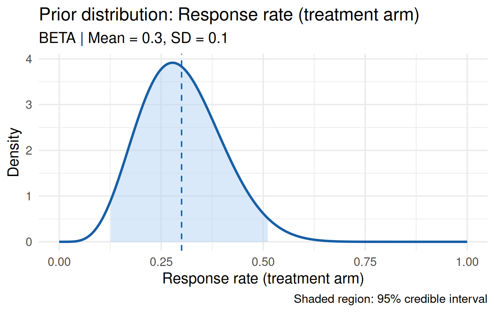
The shaded region shows the 95% credible interval and the dashed vertical line marks the prior mean.
Normal Prior (Continuous Endpoints)
For continuous quantities such as mean differences or log odds ratios:
prior_nor <- elicit_normal(
quantiles = c("0.025" = -0.5, "0.50" = 0.20, "0.975" = 0.90),
label = "Log odds ratio"
)
print(prior_nor)
#>
#> -- bayprior: Log odds ratio --
#> • Distribution : NORMAL
#> • Parameters : mu = 0.2, sigma = 0.3571
#> • Method : quantile elicitation
#> • Expert : Expert_1
#> • Mean (SD) : 0.2 (0.3571)
#> • 95% CrI : [-0.5, 0.9]Gamma Prior (Rate / Count Endpoints)
For positive-valued quantities such as Poisson event rates or median survival:
prior_gam <- elicit_gamma(
mean = 5,
sd = 2,
method = "moments",
label = "Median OS (months)"
)
plot(prior_gam)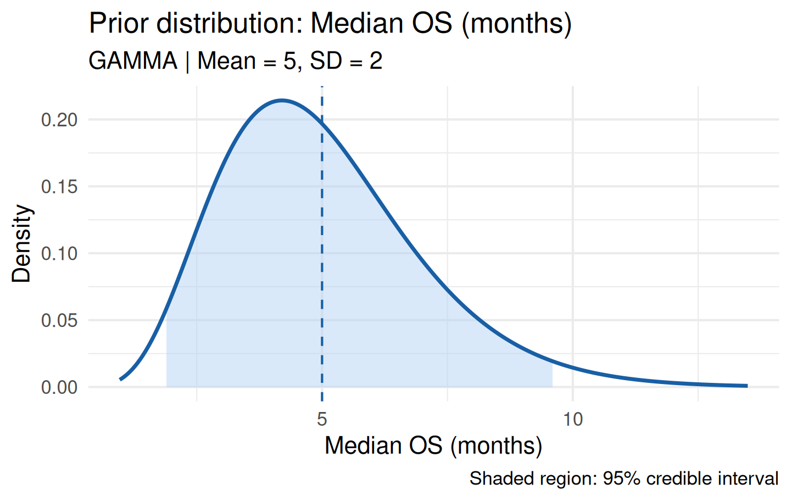
Log-Normal Prior (Hazard Ratios)
For multiplicative quantities that must remain positive:
prior_ln <- elicit_lognormal(
quantiles = c("0.05" = 0.40, "0.50" = 0.70, "0.95" = 1.20),
label = "Hazard ratio (treatment vs control)"
)
plot(prior_ln)
Roulette Method
The roulette method (Oakley & O’Hagan, 2010) converts chip allocations across pre-defined bins into a parametric prior via quantile matching. It is available interactively through the Shiny app and programmatically here:
prior_rou <- elicit_roulette(
chips = c(0L, 2L, 5L, 8L, 5L, 2L, 1L),
breaks = seq(0, 0.7, by = 0.1),
family = "beta",
label = "Response rate"
)
print(prior_rou)
#>
#> -- bayprior: Response rate --
#> • Distribution : BETA
#> • Parameters : alpha = 4.1188, beta = 9.0184
#> • Method : quantile elicitation
#> • Expert : Expert_1
#> • Mean (SD) : 0.3135 (0.1234)
#> • 95% CrI : [0.1038, 0.5768]Expert Pooling
When multiple experts contribute, their priors are aggregated into a single consensus prior via aggregate_experts().
Linear Pooling
Linear pooling produces a weighted mixture of the individual priors. It is the most common approach in clinical trial settings (externally Bayesian):
p1 <- elicit_beta(mean = 0.25, sd = 0.08, method = "moments",
expert_id = "E1", label = "Response rate")
p2 <- elicit_beta(mean = 0.35, sd = 0.10, method = "moments",
expert_id = "E2", label = "Response rate")
p3 <- elicit_beta(mean = 0.30, sd = 0.09, method = "moments",
expert_id = "E3", label = "Response rate")
consensus <- aggregate_experts(
priors = list(E1 = p1, E2 = p2, E3 = p3),
weights = c(0.40, 0.30, 0.30),
method = "linear"
)
print(consensus)
#>
#> -- bayprior: Linear pooled consensus prior --
#> • Distribution : MIXTURE
#> • Components : 3
#> • Weights : 0.4, 0.3, 0.3
#> • Mean : 0.295
plot(consensus)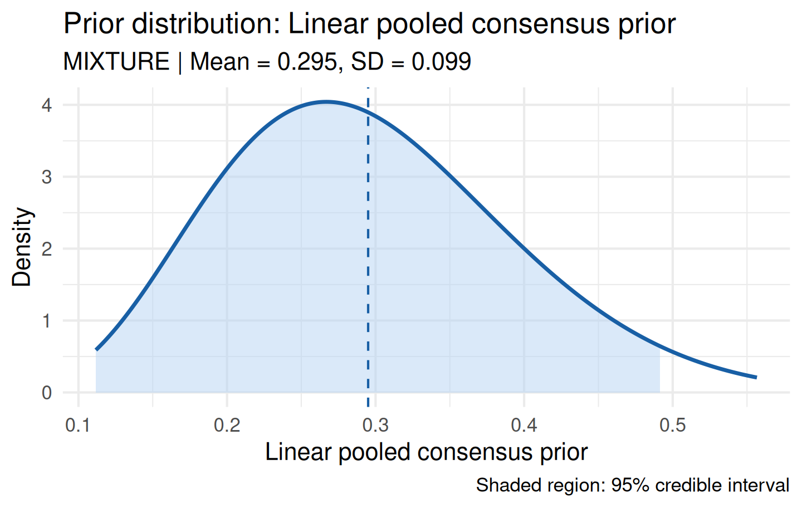
aggregate_experts() automatically computes pairwise Bhattacharyya coefficients and warns when expert disagreement is substantial.
Manual Mixture Construction
You can also build a mixture prior directly from components:
mix <- elicit_mixture(
components = list(p1, p2),
weights = c(0.5, 0.5),
label = "50-50 pooled prior"
)
plot(mix)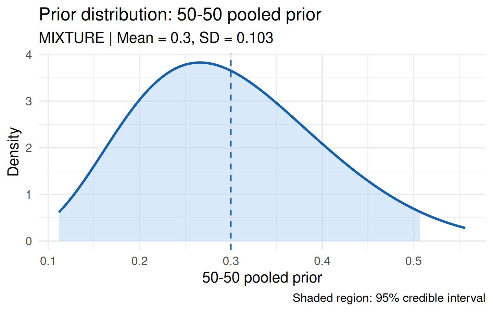
Prior-Data Conflict Diagnostics
Before updating the prior with trial data it is good practice to check compatibility between the prior and the observed data. prior_conflict() computes four complementary diagnostics:
| Diagnostic | Interpretation |
|---|---|
| Box p-value | Prior predictive p-value; < 0.05 flags conflict |
| Surprise index | Standardised distance; > 3 indicates high surprise |
| KL divergence | Information distance from prior to likelihood |
| Bhattacharyya overlap | Distributional overlap; < 0.3 is concerning |
prior <- elicit_beta(
mean = 0.30,
sd = 0.10,
method = "moments",
label = "Response rate"
)
# Observed: 18 events in 40 patients
cd <- prior_conflict(
prior = prior,
data_summary = list(type = "binary", x = 18, n = 40), # also: "continuous", "poisson", "survival"
alpha = 0.05
)
print(cd)
#>
#> -- Prior-Data Conflict Diagnostics --
#> Prior: Response rate
#>
#> • Box's p-value : 0.2384
#> • Surprise index : 1.179
#> • KL divergence : 1.8862
#> • Overlap coefficient : 0.6965
#> • Conflict severity : NONE
#>
#> ! No evidence of prior-data conflict (Box p = 0.238). The prior appears consistent with the observed data.Visualise the prior-likelihood-posterior overlay to assess compatibility graphically:
plot_prior_likelihood(
prior,
data_summary = list(type = "binary", x = 18, n = 40),
show_posterior = TRUE
)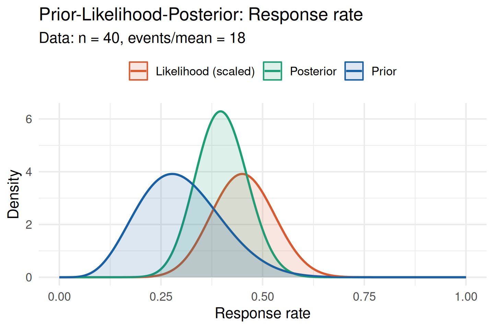
When the prior (blue) and likelihood (orange) overlap substantially there is no meaningful conflict, and the posterior (green) represents a credible update.
Sensitivity Analysis
Regulatory guidelines require demonstrating that trial conclusions are robust to plausible prior variations. sensitivity_grid() evaluates how posterior inferences change across a grid of hyperparameter values.
Note: the grids below are intentionally coarse for vignette build speed. In practice, use finer grids (e.g. seq(1, 8, 0.5)) to obtain smooth surfaces.
sa <- sensitivity_grid(
prior = prior,
data_summary = list(type = "binary", x = 14, n = 40), # also: "continuous", "poisson", "survival"
param_grid = list(alpha = seq(1, 6, 1), beta = seq(2, 14, 2)),
target = c("posterior_mean", "prob_efficacy"),
threshold = 0.30
)Tornado Plot
The tornado plot ranks posterior quantities by their range across the hyperparameter grid. Wider bars indicate higher prior sensitivity:
plot_tornado(sa)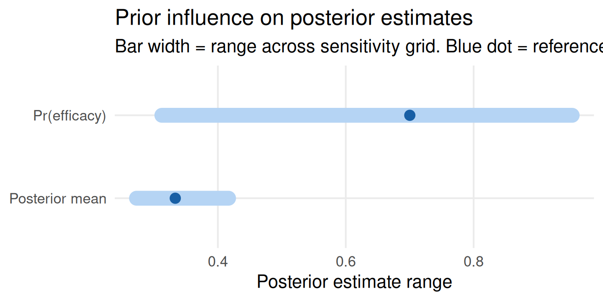
Influence Heatmap
The heatmap shows how the posterior mean changes as both hyperparameters vary. The orange diamond marks the reference prior:
plot_sensitivity(sa, target = "posterior_mean")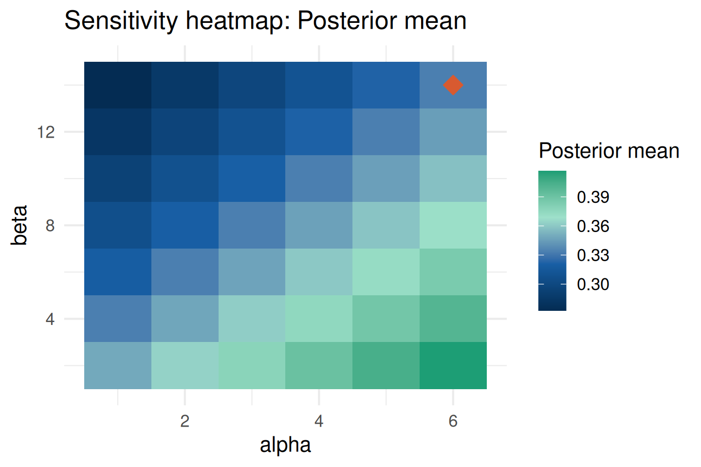
Credible Interval Sensitivity
sensitivity_cri() focuses specifically on the posterior credible interval width — a key regulatory quantity:
cri_sa <- sensitivity_cri(
prior = prior,
data_summary = list(type = "binary", x = 14, n = 40), # also: "continuous", "poisson", "survival"
param_grid = list(alpha = seq(1, 6, 1), beta = seq(2, 14, 2)),
cri_level = 0.95,
threshold = 0.30
)
plot_sensitivity(cri_sa, target = "cri_width")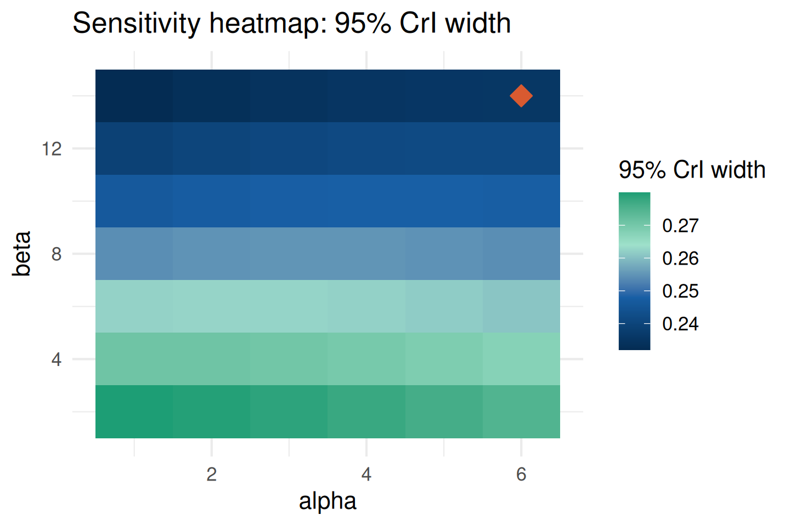
Robust and Sceptical Priors
When prior-data conflict is detected, or when a conservative regulatory stance is required, bayprior provides ready-made alternative prior constructions.
Robust Mixture Prior
A robust prior mixes an informative component with a vague (diffuse) component (Schmidli et al., 2014). The vague component ensures the posterior is never dominated by a conflicting informative prior. The default vague_weight = 0.20 gives an 80/20 informative/vague split:
informative <- elicit_beta(
mean = 0.30,
sd = 0.08,
method = "moments",
label = "Response rate"
)
rob <- robust_prior(
informative = informative,
vague_weight = 0.20,
label = "Robust mixture prior"
)
plot(rob)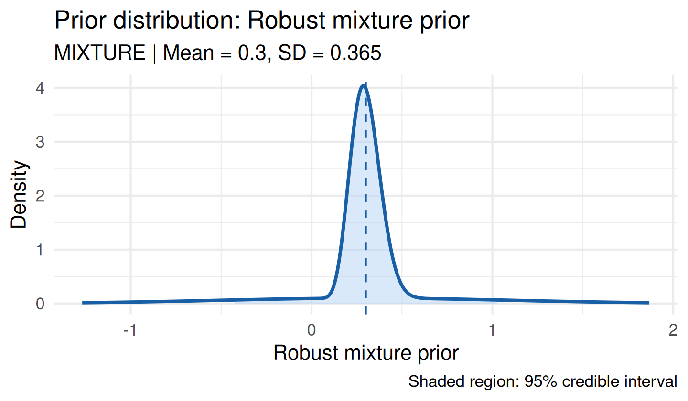
Sceptical Prior
A sceptical prior is centred at the null value of the treatment effect and represents a conservative regulatory stance (Spiegelhalter et al., 1994).
For a Normal family (e.g. log odds ratio, mean difference), null_value is the null treatment effect (typically 0):
sc_norm <- sceptical_prior(
null_value = 0,
family = "normal",
strength = "moderate",
label = "Log odds ratio (sceptical)"
)
plot(sc_norm)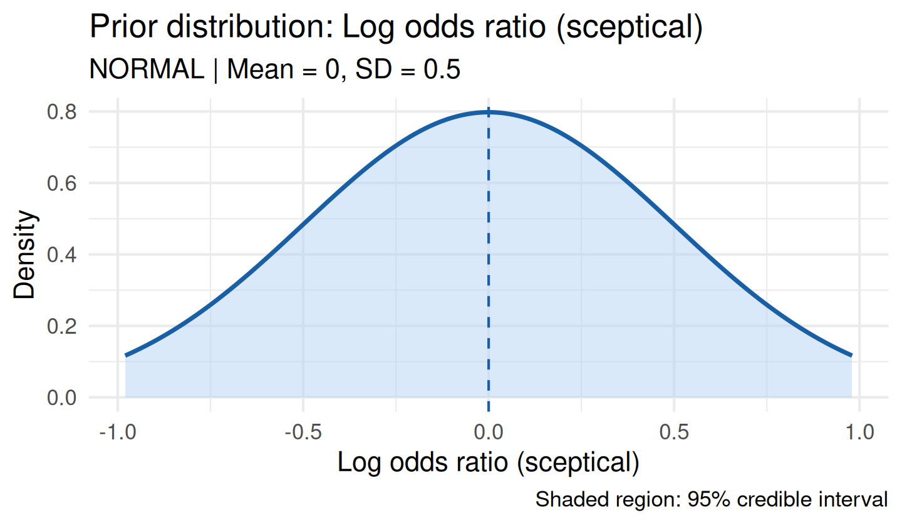
For a Beta family (binary response rate), null_value must be in (0, 1):
sc_beta <- sceptical_prior(
null_value = 0.20, # null response rate of 20%
family = "beta",
strength = "moderate",
label = "Response rate (sceptical)"
)
plot(sc_beta)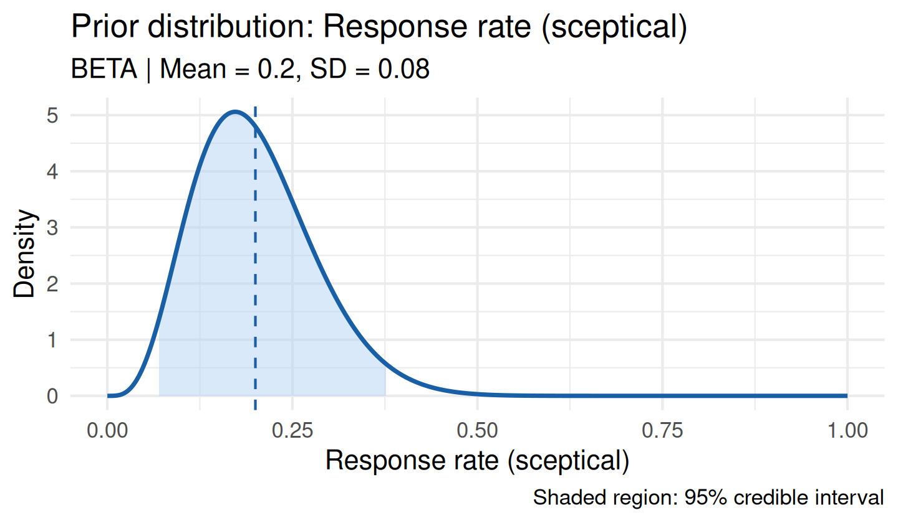
Power Prior Calibration
When relevant historical data exist, a power prior down-weights the historical evidence by \(\delta \in (0, 1]\) before incorporating it. calibrate_power_prior() selects \(\delta\) to achieve a target Bayes Factor (Ibrahim & Chen, 2000; Gravestock & Held, 2017).
base <- elicit_beta(
mean = 0.50,
sd = 0.20,
method = "moments",
label = "Response rate"
)
calib <- calibrate_power_prior(
historical_data = list(type = "binary", x = 12, n = 40),
current_data = list(type = "binary", x = 18, n = 50),
base_prior = base,
target_bf = 3,
delta_grid = seq(0.10, 1.0, by = 0.10), # coarse grid for vignette speed
method = "bayes_factor"
)
print(calib)
#>
#> -- Power Prior Calibration --
#> • Method : bayes_factor
#> • Target BF : 3
#> • Optimal delta : 0.1
#> • Power prior mean: 0.4135
#> • Power prior SD : 0.1538
plot(calib)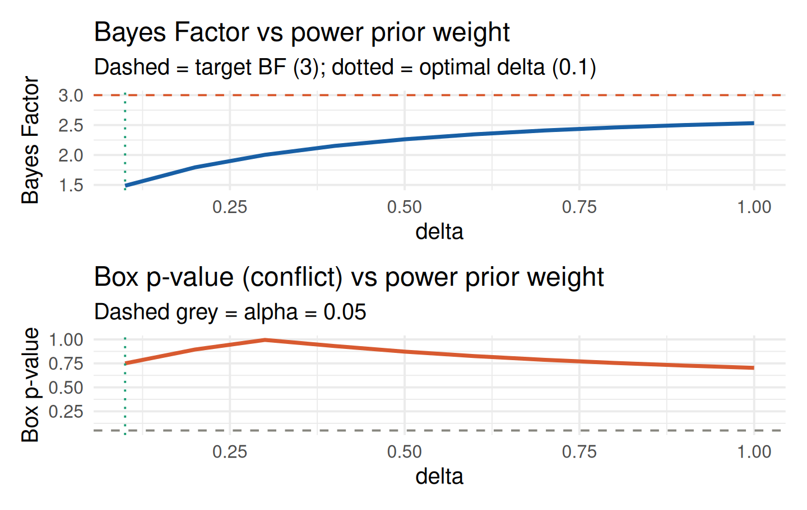
The calibration curves show the Bayes Factor (top) and Box p-value (bottom) across the \(\delta\) grid. The vertical dotted green line marks the optimal weight and the horizontal dashed lines mark the target BF and \(\alpha = 0.05\).
Multivariate Conflict Diagnostics
For trials with co-primary endpoints, conflict_mahalanobis() extends the conflict check to the multivariate setting. The Mahalanobis distance has a known \(\chi^2\) reference distribution under compatibility:
mv <- conflict_mahalanobis(
prior_means = c(0.35, 0.60),
prior_cov = matrix(c(0.01, 0.003, 0.003, 0.015), 2, 2),
obs_means = c(0.55, 0.58),
obs_cov = matrix(c(0.008, 0.002, 0.002, 0.010), 2, 2) / 50,
labels = c("Response rate", "OS rate")
)
print(mv)
#>
#> -- Multivariate Prior-Data Conflict (Mahalanobis) --
#> • Mahalanobis D : 2.0936
#> • Chi-sq p-value: 0.1117 (df = 2)
#> • Conflict flag : FALSE
#>
#> Marginal z-scores per parameter:
#> Response rate OS rate
#> 1.984 -0.162
#>
#> i No multivariate prior-data conflict detected (Mahalanobis D = 2.094, p = 0.112).The marginal_z scores identify which endpoint contributes most to any detected conflict.
Generating a Prior Justification Report
Once the analysis is complete, prior_report() renders a self-contained regulatory-ready document in HTML, PDF, or Word format. The report includes the prior specification, conflict diagnostics, sensitivity visualisations, and an FDA/EMA compliance checklist.
# prior_report() calls rmarkdown::render() internally and cannot be run
# inside a vignette build. Run interactively after loading bayprior.
prior_report(
prior = prior,
conflict = cd,
sensitivity = sa,
output_format = "html", # or "pdf" or "docx"
trial_name = "TRIAL-001",
sponsor = "BioPharma Ltd",
author = "J. Smith",
notes = paste0(
"Prior based on Phase 2 internal data and two external expert ",
"elicitations. Sensitivity analysis confirms robustness across a ",
"wide range of prior hyperparameter values."
)
)Complete Worked Example
The following end-to-end example mirrors a realistic binary-endpoint trial workflow, combining three expert opinions and assessing sensitivity.
# 1. Elicit priors from three experts using different methods
e1 <- elicit_beta(mean = 0.28, sd = 0.08, method = "moments",
expert_id = "E1", label = "ORR")
e2 <- elicit_beta(mean = 0.35, sd = 0.10, method = "moments",
expert_id = "E2", label = "ORR")
e3 <- elicit_beta(
quantiles = c("0.10" = 0.15, "0.50" = 0.30, "0.90" = 0.52),
expert_id = "E3", label = "ORR"
)
# 2. Pool into a consensus prior
consensus <- aggregate_experts(
priors = list(E1 = e1, E2 = e2, E3 = e3),
weights = c(0.40, 0.35, 0.25),
method = "linear"
)
# 3. Check conflict with interim data (20 responses in 55 patients)
data_obs <- list(type = "binary", x = 20, n = 55)
cd_full <- prior_conflict(consensus, data_obs)
print(cd_full)
#>
#> -- Prior-Data Conflict Diagnostics --
#> Prior: Linear pooled consensus prior
#>
#> • Box's p-value : 0.7015
#> • Surprise index : 0.3834
#> • KL divergence : 0.6896
#> • Overlap coefficient : 0.9022
#> • Conflict severity : NONE
#>
#> ! No evidence of prior-data conflict (Box p = 0.701). The prior appears consistent with the observed data.
# 4. Visualise prior-likelihood-posterior
plot_prior_likelihood(consensus, data_obs, show_posterior = TRUE)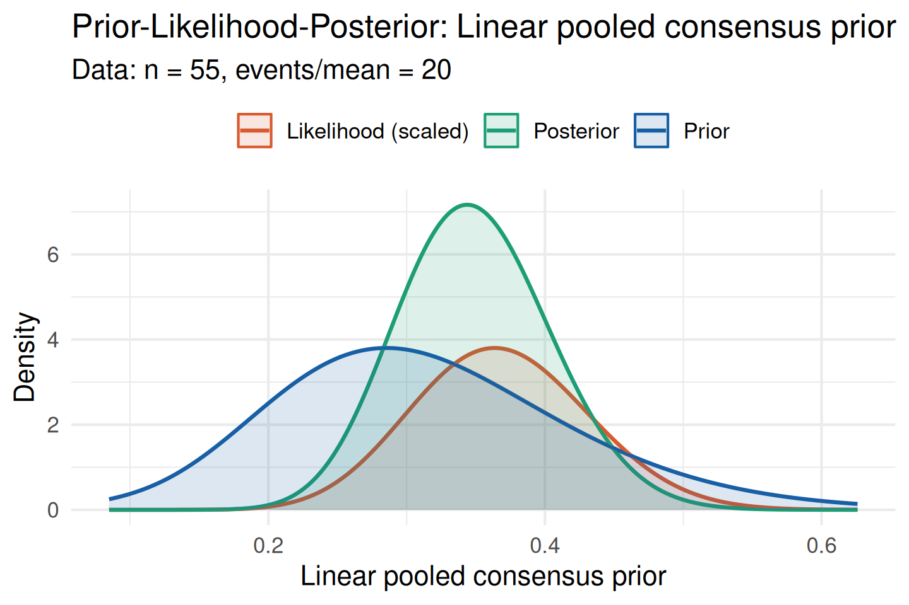
# 5. Sensitivity analysis (coarse grid for vignette speed)
sa_full <- sensitivity_grid(
prior = consensus,
data_summary = data_obs,
param_grid = list(alpha = seq(1, 6, 1), beta = seq(2, 12, 2)),
target = c("posterior_mean", "prob_efficacy"),
threshold = 0.25
)
plot_tornado(sa_full)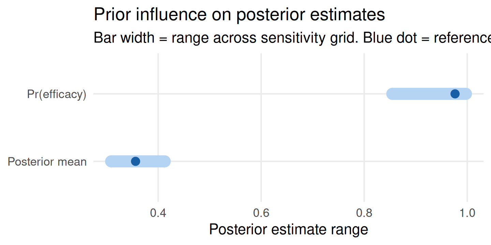
plot_sensitivity(sa_full, target = "prob_efficacy")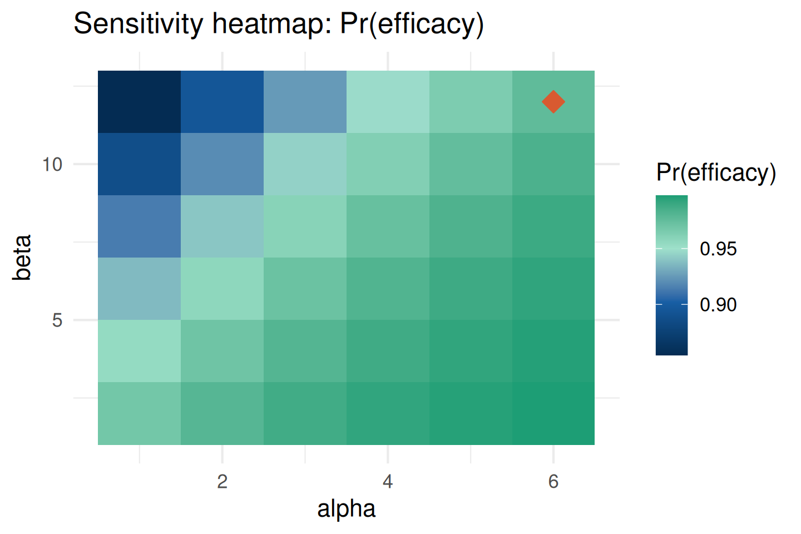
# 6. Robust alternative in case conflict worsens at final analysis
rob_full <- robust_prior(consensus, vague_weight = 0.20)
plot(rob_full)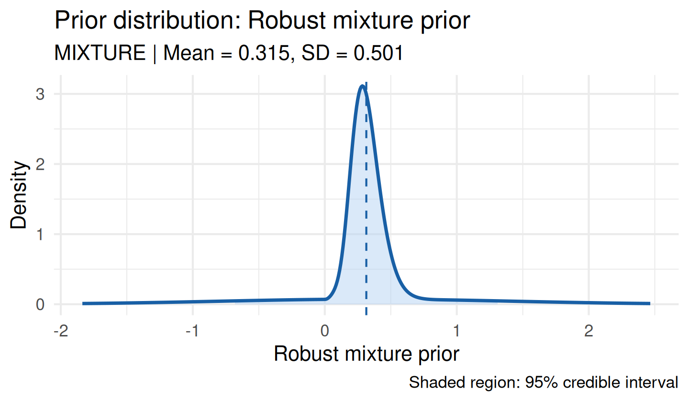
Function Reference
| Function | Purpose |
|---|---|
elicit_beta() |
Beta prior for binary endpoints — support (0, 1) |
elicit_normal() |
Normal prior for continuous endpoints |
elicit_gamma() |
Gamma prior for rate/count endpoints |
elicit_lognormal() |
Log-normal prior for hazard ratios |
elicit_exponential() |
Exponential prior for constant hazard / Poisson rates |
elicit_weibull() |
Weibull prior for non-constant hazard survival times |
elicit_roulette() |
Chip-based roulette elicitation |
elicit_mixture() |
Manual mixture prior construction |
aggregate_experts() |
Pool multiple expert priors |
prior_conflict() |
Univariate prior-data conflict diagnostics |
conflict_mahalanobis() |
Multivariate conflict diagnostics |
sensitivity_grid() |
Grid sensitivity of posterior quantities |
sensitivity_cri() |
Credible interval sensitivity |
plot_sensitivity() |
Heatmap / line plot of sensitivity results |
plot_tornado() |
Tornado plot of prior influence |
plot_prior_likelihood() |
Prior-likelihood-posterior overlay |
robust_prior() |
Robust mixture prior |
sceptical_prior() |
Sceptical prior centred at null |
calibrate_power_prior() |
Calibrated power prior from historical data |
prior_report() |
Regulatory prior justification report |
References
Box, G. E. P. (1980). Sampling and Bayes’ inference in scientific modelling and robustness. Journal of the Royal Statistical Society A, 143, 383–430.
Gravestock, I. & Held, L. (2017). Adaptive power priors with empirical Bayes for clinical trials. Pharmaceutical Statistics, 16, 349–360.
Ibrahim, J. G. & Chen, M.-H. (2000). Power prior distributions for regression models. Statistical Science, 15, 46–60.
O’Hagan, A., Buck, C. E., Daneshkhah, A., Eiser, J. R., Garthwaite, P. H., Jenkinson, D. J., Oakley, J. E., & Rakow, T. (2006). Uncertain Judgements: Eliciting Experts’ Probabilities. Wiley.
Oakley, J. E. & O’Hagan, A. (2010). SHELF: the Sheffield Elicitation Framework. University of Sheffield.
Schmidli, H., Gsteiger, S., Roychoudhury, S., O’Hagan, A., Spiegelhalter, D., & Neuenschwander, B. (2014). Robust meta-analytic-predictive priors in clinical trials with historical control information. Biometrics, 70, 1023–1032.
Spiegelhalter, D. J., Freedman, L. S., & Parmar, M. K. B. (1994). Bayesian approaches to randomized trials. Journal of the Royal Statistical Society A, 157, 357–416.